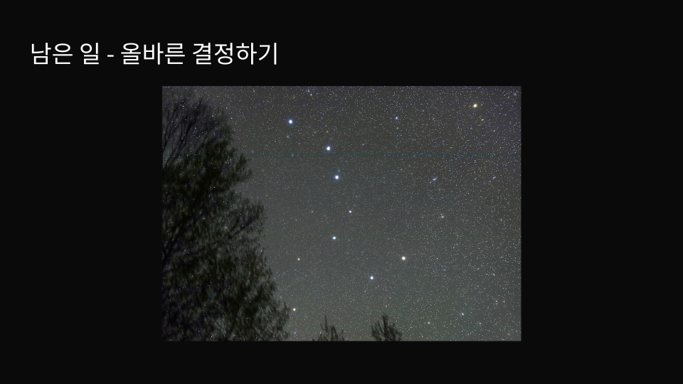
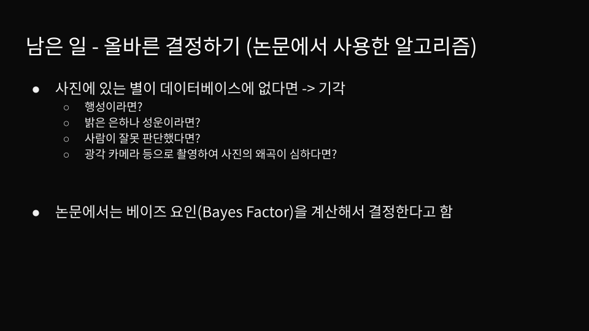
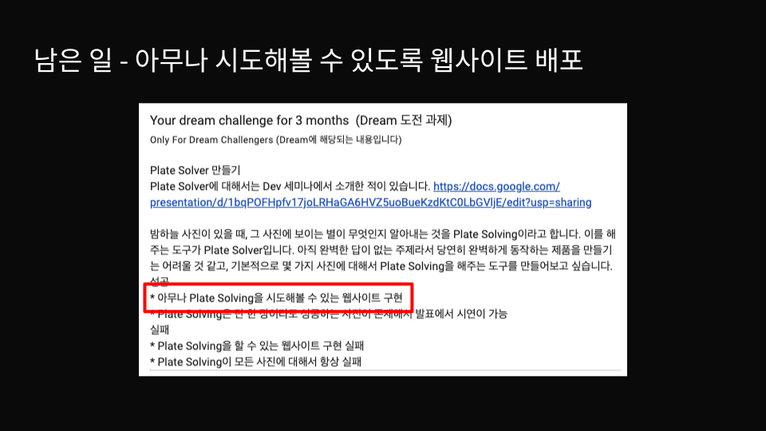
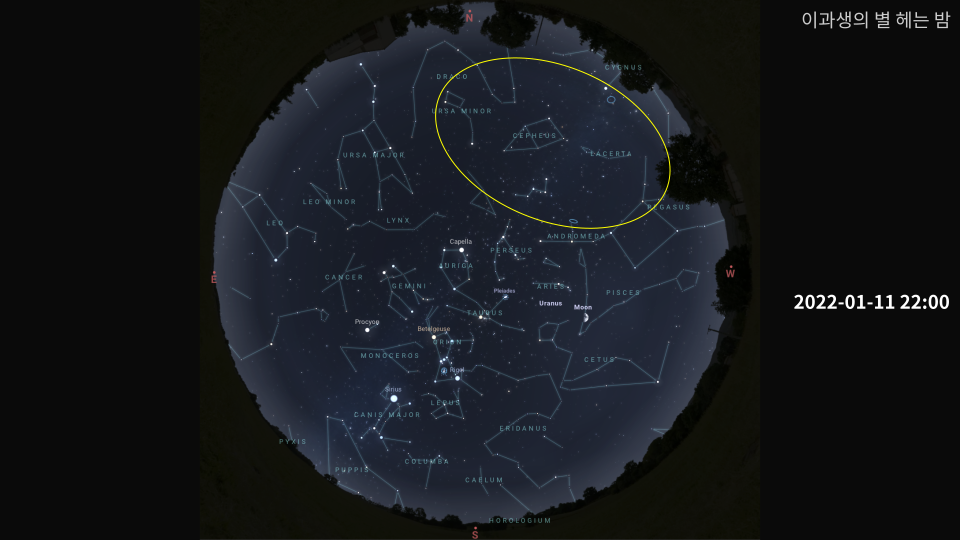
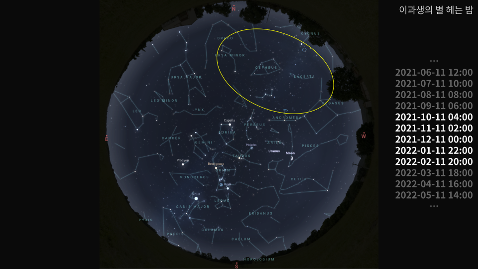

실패
실패Plate Solving


사진 속 점 하나하나가
하늘의 어느 방향인지 알아내는 일
= 이 사진에 찍힌 별은 무엇이고, 어떤 별자리일까?






샘플 16장: V2 결과
실패 실패
실패 실패
실패 실패
실패 실패
실패 실패
실패 실패
실패 실패
실패 실패
실패 실패
실패 실패
실패 실패
실패 실패
실패 실패
실패 성공
성공 실패
실패샘플 16장: V3 결과
성공성공성공성공성공성공성공성공성공성공성공성공성공성공성공모름샘플 16장: V2 결과
실패실패실패실패실패실패실패실패실패실패실패실패실패실패성공실패샘플 16장: V2 + 필연 판정
모름모름모름모름모름모름모름모름모름모름모름모름모름모름성공모름2. 주변 별 정보 표시에서 오차 보정

V3: 사람 손 없이 샘플 16장
성공성공성공모름성공성공성공성공성공성공성공성공성공성공성공모름
